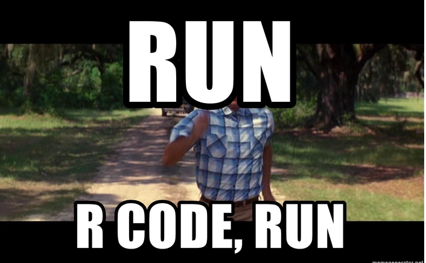
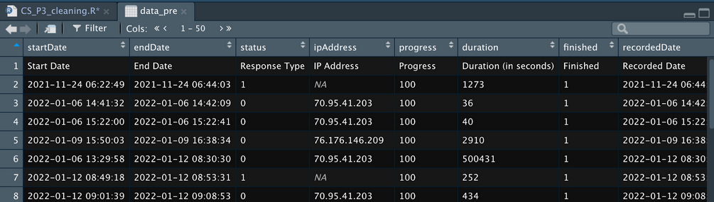
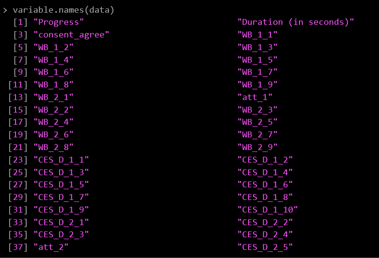
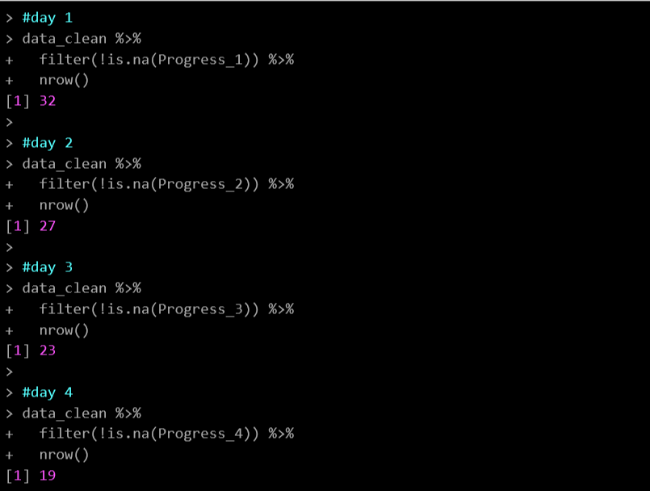
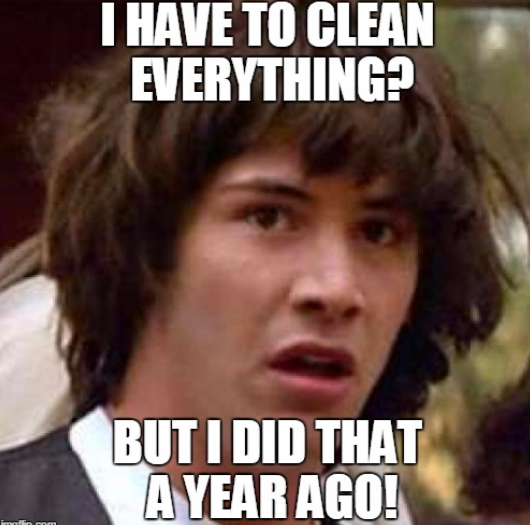

Cleaning Data
AKA Getting Data ready for analysis
I’m not going to lie to you here. Data cleaning is the BIGGEST step in data analysis. You literally cannot do anything until you get your data into a format that can be used. And this takes time.
You can clean your data in many ways using many programs. But however you do it, you always want to be able to
See your work, and
Go back to an earlier stage to check/edit any changes you’ve made
This requires very good note taking, version control, and/or change tracking. (Remember what I wrote in Good Record Keeping? That is all very relevant now)
I prefer to do all my data cleaning in R because this allows me to do these things. Excel is easier, but it’s very easy to mess up your data and not know where you messed up. R is more difficult to get the hang of, but (if you do it right) you can clearly see what you have done every step of the way and mistakes are easy to find and change.
Here are my hard and fast rules on data cleaning…
Rules of Data Cleaning
Never EVER edit the raw data set
Yes you can always re-download your data from Qualtrics, but don’t rely on that being there. You want to have the purest version of your data always available. This allows you to share it with other researchers and allows you to always have the ability to go back to square one if things go sideways (which can happen during cleaning).
Keep versions of all major changes to your data
Think of this like re-spawn places. How much work do you want to have to re-do if you find a big issue and need to start over again? My go-to major changes areCombining Pre and Post surveys
Restructuring from a long to wide data (This is a much more technical point that I’ll cover in another guide)
Adding new columns that aggregate new data points
This will likely be different for every project, but it’s exceptionally helpful to have these versions (especially if you are working in Excel).
Make notes of ALL changes
And I mean ALL the changes you make. My R cleaning files are fully annotated with notes about each change I make to the data and why I made those changes. I was once told that you should leave notes in your analysis documents that are good enough that someone else could look at your code and understand what is going on – and usually that “someone else” is you in 6 months time. I guarantee you that you will not remember what those changes were when you come back to your project after a couple of weeks of doing something else. And if you intend to go further in research (like grad school), you will definitely have data that you haven’t looked at for 2-3 years and will need those detailed notes. Make. Lots. Of. Notes.
Okay, now we can get to the meat of the exercise. Every project will have specific data cleaning needs but there are a few that are common enough that I’m going to cover them here. These are as follows…
Common Data Cleaning Tasks
Removing irrelevant data (e.g. test subjects, technical errors etc)
Combining surveys by participant ID (for multi-part studies)
Getting Started With R

Download R & R Studio
You need both. R runs the code, R Studio is easier to work with than R alone.
Downloading R
Click on CRAN (under downloads) on the R-project site
Use the first server to download - it’s called 0-Cloud
Select the R download for the system you are using (Windows, macOS, or Linux)
I typically recommend downloading the latest version, but check to make sure you are running the appropriate OS to handle it
Install based on your OS
Downloading R Studio
Scroll down on the R Studio site until you see either a button for downloading for Mac, or a bunch of links for downloading for other OS’s
Install based on your OS
You will code in R Studio. This program is basically an overlay for R that makes it more user-friendly.
Extra R Resources
To begin with I’m going to recommend R for Data Science as a great resource for cleaning your data in R. This is what I used to learn a lot of R and the packages I use to clean are detailed by them (e.g. Tidyverse). I would recommend bookmarking this e-book for future reference.
There’s also some really good courses on CodeAcademy and Coursera that cover basic R. It’s definitely helpful to start playing around with R now to get comfortable with the format.
Useful course links:
Creating a Project
The first thing you need to do in R is create a project. I’m not going to reinvent the wheel here. The R Studio help site has everything you need to create a project. Check their instructions out here - https://support.rstudio.com/hc/en-us/articles/200526207-Using-RStudio-Projects
Setting up Your Cleaning File
Once you have created your project, set your cleaning script up as follows:
Create a new R Script File and give it a meaningful name related to “Cleaning”. You will use this one script to clean all your data. This makes it easier to clean new data for your project when it comes in (e.g. when you run future phases of data collection)
Make sure the Tidyverse package is installed first. Type the following code in your Cleaning Script:
#this installs the packages install.packages("tidyverse") install.packages(“lubridate”) #this runs the package library(tidyverse) library(lubridate)
- Make a note of when you downloaded the data. This will allow you to refer quickly to what data set you are analyzing. This is really important if you are running analyses before you have collected all the data. I like to make notes about whether I am still collecting data so I know where I’m at.
#Data downloaded from Qualtrics Thursday February 10 2022
#Data collection is still ongoing for this project- Give a useful title and make any notes at the start of your cleaning document. Things to include might be:
This chunk of cleaning script is related to the Pre Survey/Post Survey
If you have made any changes in Excel before you imported into R
Anything weird you think you’ll need to remember in the future
###################################################
#Cleaning up the Pre-Survey
#Two rows removed in Excel before I imported into R
###################################################- Load data & Save it to a data frame
To do this you are going to give your data frame a useful name. You can name this whatever you want, but make sure it makes sense. For full instructions on importing data see https://r4ds.had.co.nz/data-import.html.
As a note, I save my R files in a very specific file structure:
Project_name
Script
cleaning.r
prelim_analyses.r
hypothesis_testing.r
Data
project_pre_date.csv
project_post_date.csv
Archive
- All old data and scripts not being currently used
Because of this, I need to use the prefix ./Data/ before I call the csv I am importing. If you save your data directly into the same folder as your cleaning script you can just type out the csv inside the “ “
data <-
read_csv("./Data/CS_P3_Pre_Feb102022csv.csv", na = "")Once you load your data set, you can open it to see what it looks like. Either click on the data in the Environment window on the right, or type the following into your Console at the bottom of your screen: View(data)
This will open a window of your data and is really helpful to give you a sense of what your data looks like:

At the top there is the heading row which will automatically be the first row that R imported. This is why it is important to give your Qualtrics questions meaningful labels - so you can figure them out later on in R.
When you import from Qualtrics you will always get a spare row that describes what that column is. This is the text that is displayed in the question and you’ll want to delete it straight away as you don’t need it in R.
Then it will show you a row for each submission in Qualtrics.
Qualtrics also includes a bunch of unnecessary metadata at the start of your spreadsheet that you can get rid of. Some of this is useful (progress, recordedDate can sometimes be helpful) but ultimately we are going to delete these columns.
Now we can get started on actually cleaning…
Removing irrelevant data (e.g. test subjects, technical errors etc)
Remove the extra row/s from Qualtrics
As I said earlier, Qualtrics puts extra rows in your spreadsheet with more descriptive text about what is being imported. You can remove this in excel before you import into R - make sure to make a note of that in your R code so you know you’ve done this. Or you can remove it in R using this code:
data <-
data[-(1:2),]
# Code Notes: # Using [ ] indexes the rows by row number
# The - sign tells R to remove them (1:2) means everything between rows 1 and 2
# The , with nothing after it indicates that we don't care about columnsRemoving Test Subjects
You are likely going to have a bunch of test data at the start of the sheet. If you know when your study actually went live you can remove test subjects using that date. Otherwise, you might need to look for other tells
The word “test” in a specific field
Not including a proper unique ID (if your RA’s manually enter these - typical for in-lab studies)
You can remove your test subjects in Excel before you import into R, but make sure you make a note of it when you import your data.
To remove them by date in R you need to do a bit of wrangling first. The first step is to make sure the startDate is read as an actual date. For more information about dates in the Tidyverse see - https://r4ds.had.co.nz/dates-and-times.html#dates-and-times
Remember to always start with a note of what you are doing
You can use the same data-frame name to save over here. (I typically do this until I’m making big data-frame changes)
Use filter() to find people who started after the survey went live.
For full instructions on using filter see - https://r4ds.had.co.nz/transform.html#filter-rows-with-filter
# Remove test subjects - anything that was recorded before January 31 2022, 11.59am
# Make sure Start Date is read as a date
data <-
data %>%
mutate(StartDate = mdy_hm(StartDate, tz = "America/Los_Angeles"))
# Note: you need to call the package "lubridate" for this to work
# It is also important to make sure the time zone is set to the right time so when you remove participants they will be in relation to the time YOU actually started the study (not their local time)
# to see all the timezones that you might need use: OlsonNames()
str(data$StartDate) #checking the structure of the date
# The StartDate variable will now show as POSIxct, which is the code R uses for a unicode data
> str(data$StartDate)
POSIXct[1:583], format: "2022-11-08 14:30:10" "2022-11-08 14:31:39" "2022-11-08 14:37:51" ...
data <-
data %>%
filter(StartDate > "2022-01-31 11:59:00 UTC")
# Note: You'll need to place your date/time in " " for R to read it and make sure to end with UTCRemoving Technical Errors
You may also have technical errors that you know you have to remove. You should have a note document for your study that keeps track of any issues while the study is being run. If you need to remove participants because of technical issues while they completed the study you can remove them by their ID.
The actual label that is used for their ID will be different for each study, so make sure you know what you labeled it.
I use the Filter function to remove rows that have certain ID’s.
#Remove subjects 3CS5643 and 1CS45793 because of problems with the laptop while running study
data <-
data %>%
filter(unique_id != "3CS5643" & unique_id != "1CS45793")
# Code notes:
# != means 'does not equal
# put the id's in " " because they will be character strings and they need " " for R to find them
# & means AND, so R will remove rows that have the ID as 3CS5643 AND rows that have the ID as 1CS45793
# make sure you specify the label unique_id again for each entry after an AND (&) otherwise it won't workRemoving Unnecessary Columns
Qualtrics is also going to put a lot of columns in that you don’t need. Most of these are meta-data that you will never use so you can get rid of them to make viewing your sheet easier. It’s not necessary to remove them, but I have a rule of only keeping data that is relevant to my analysis.
You can delete these in Excel before you import - remember to make a note in R if you do this.
To remove in R, use the select() function to remove all the rows you don’t need. Placing a minus sign (-) in front of each variable will remove it.
I like to leave in
progress
duration
data <-
data %>%
select(-StartDate,
-EndDate,
-Status,
.... )
# Coding notes:
# Select allows us to select certain columns,
# Adding a - sign removes themCleaning up your labels
If you haven’t labelled your items sensibly in Qualtrics before you start you may have to do some editing now so you can understand your data. You can also do this in Excel, but remember to make a note of this when you import your data into R.
To see all the variable names in your spreadsheet easily use this code: variable.names(data)
All the names will then print in the Console at the bottom of your R screen:

I’ve labelled my items based on what measure they are:
WB = Ryff Well-being Scale
CES_D = Depression Inventory
Att = Attention check items
If you need to change any variable names use the following:
#Rename duration column
data <-
data %>%
rename(duration = `Duration (in seconds)`)
# Code Notes:
# rename is in the same package as select()
# It functions as... rename(new_name = old_name)Combining surveys by participant ID (for multi-part studies)
If you have multi-part studies then you will need to combine the separate spreadsheets together so you can analyze them as one spreadsheet.
This is done by having a unique ID for each participant that they enter for each survey so you can match them across surveys.
You will want to tidy up each spreadsheet before you combine them together. So, make sure you go through the steps above for each spreadsheet before you get to this step.
There are some important things to note when you merge spreadsheets
Make sure there is a participant ID on each data frame
Make sure the label/variable name for participant ID is the same on each data frame
The code you will need to this is:
#create a new dataframe for all the data
data_all <-
full_join(data_pre, data_post, by= "id", copy = TRUE, suffix = c("_pre", "_post"))
# Code Notes:
# I use full_join() because I want to keep everything from both data frames
# The first two terms are the two dataframes that you are merging
# by = tells R what column you are using as the key to merge across the frames
# I use "copy = TRUE" because I want duplicates of my variables
# And R will append the suffixes _pre and _post to the duplicates it finds There are several ways to merge data frames together. See this section of R for Data Science for a good overview - https://r4ds.had.co.nz/relational-data.html#relational-data
If you have more data frames to join you can pipe them on to the code as follows:
#create a new dataframe for all the data
data_all <-
full_join(data_pre, data_post, by= "id", copy = TRUE, suffix = c("_pre", "_post")) %>%
full_join(data_day1, by = "id", copy = TRUE) %>%
full_join(data_day2, by = "id", copy = TRUE) %>%
full_join(data_day3, by = "id", copy = TRUE) %>%
full_join(data_day4, by = "id", copy = TRUE) %>%
full_join(data_day5, by = "id", copy = TRUE) %>%
full_join(data_day6, by = "id", copy = TRUE) %>%
full_join(data_day7, by = "id", copy = TRUE)And now you should have one giant data frame that has a row for each of your participants’ responses across all surveys!
Now is a good time to take a look at the data and see if you notice anything weird:
Unusual id’s that don’t fit the pattern you created
An entire row of missing data
Extraordinarily long progress times
There may be some things you need to clean up and address at this stage, but everything we’ve covered should help you with that. If you are still lost on how to fix your problem, reach out to whoever is mentoring you.
Exclusions
Participants will need to be excluded from your study. You will have made some a priori decisions about your exclusion criteria and that is what you will follow in this section. Common exclusions are:
Attrition - removing those who didn’t complete the whole study
Heard about the details of the study
Figured out the deception being used
Attrition
Each study will have different rules for removing participants who did not complete the whole study. If you have one survey you might only include people who have 100% progress. If you have multiple parts to your study, you might exclude participants who do not return for part 2. Check with the exclusion rules for your study and remove participants who meet the attrition exclusion requirements.
Qualtrics provides a progress variable that is useful at filtering participants at this stage.
Use the filter() function to remove participants where their progress does not equal 100.
# remove participants who did not complete all of the Pre survey
data_clean <-
data_all %>%
filter(Progress_pre == 100)Be sure to keep a record of where people dropped out of the study. If you have multiple surveys that they need to complete (e.g. daily logging surveys for an intervention) you can count the number of participants who completed each day with the following:
# Count where participants dropped off during the weekly intervention
#day 1
data_clean %>%
filter(!is.na(Progress_1)) %>%
nrow()
#day 2
data_clean %>%
filter(!is.na(Progress_2)) %>%
nrow()
#day 3
data_clean %>%
filter(!is.na(Progress_3)) %>%
nrow()
#day 4
data_clean %>%
filter(!is.na(Progress_4)) %>%
nrow()This gives you counts of each day:

Heard about the details of the study
If you have a question that asks if the participant heard about the details of the study then you can use this to filter them out.
You may need to double check in Qualtrics what each number relates to (e.g., 1 = Yes; 2 = No)
# Remove participants who said they heard about the details of the study
# 1 = Yes; 2 = No
data_clean <-
data_clean %>%
filter(hear_about_post == 2) #only include those who said they didn't hear (2)Make a note of how many participants you remove at this stage
Figured out deception
If you have deception in your study you may have decided to remove participants who correctly guessed the purpose of the study.
You will need to read through the free responses and decide if anyone has to be removed. This is often easier in Excel.
Then remove them based on their ID.
# remove participants ID 2CS45673 because they guessed the purpose of the study
data_clean <-
data_clean %>%
filter(id != "2CS45673")Attention checks
Our lab uses a standard set of attention and integrity checks to ensure the integrity of our self-report data. As part of your exclusion criteria you will have made some a priori decisions on who to include in your study. Use these as your rules when filtering out participants.
There’s a few steps in dealing with your attention checks.
First you’ll need to combine them to make an overall proportion score of how each participant did. This is because you’ve probably got an exclusion rule based on how many checks a participant can miss.
You may also need to account for different attention check questions appearing in different conditions. You don’t want to exclude a participant for missing an attention check that wasn’t even shown to them because they weren’t in that condition.
If you have an intervention or exercise that requires sustained attention on a video, audio file, or activity outside of a survey, you will need to separate out these integrity questions from the attention checks.
Finally, you may have to retain some people in an intent-to-treat dataset. This allows for checking if simply being in a study (but not really paying attention to it) led to any improvements.
Combining Attention Checks
I always start by making a note of all the attention checks and integrity questions that were included in the study and what the a priori decision was regarding exclusions.
#objective attention checks
# all participants
# att_1_pre -> correct response == 6
# att_2_pre -> correct response == 1
# att_1_post -> correct response == 2
# att_2_post -> correct response == 2
# strength conditions only
# att_3_pre -> correct response == 3
# att_4_pre -> correct response == 2I now use the ifelse() function to allocate a 0 or a 1 to a participant if they failed or passed the attention check. I use this with the Mutate() function to save this number over their responses.
Ifelse works like this:
Ifelse (variable_name [does not equal] value, if true then place this value, if false then place this value)For example:
Ifelse(att_1_pre != 6, 0, 1)If the value in att_1_pre does not equal 6 then put a 0 (because they failed the attention check), if it does equal 6 then put a 1
The example of code below also includes if else conditions for the total attention score which is what you will use if you have different conditions with different attention checks visible. It’s the same logic as above:
ifelse(condition == “top” | condition == “bottom”, (att_1_pre + att_2_pre + att_1_post + att_2_post + att_3_pre + att_4_pre), (att_1_pre + att_2_pre + att_1_post + att_2_post)If the condition equals top OR bottom, then add up these variables (because these are the attention checks those participants saw. If the condition is not one of those two, then just add up these variables (because they only saw those checks)
Then I mutate a final variable that calculates a proportion (from 0-1) so I can easily see how many attention checks were passed
#create a total attention check percentage
# 0 = failed, 1 = passed
data_clean <-
data_clean %>%
mutate(att_1_pre = ifelse(att_1_pre != 6, 0, 1),
att_2_pre = ifelse(att_2_pre != 1, 0, 1),
att_1_post = ifelse(att_1_post != 2, 0, 1),
att_2_post = ifelse(att_2_post != 2, 0, 1),
att_3_pre = ifelse(att_3_pre != 3, 0, 1),
att_4_pre = ifelse(att_4_pre != 2, 0, 1),
att_total = ifelse(condition_pre == "top" |
condition_pre == "bottom",
(att_1_pre + att_2_pre + att_1_post + att_2_post + att_3_pre + att_4_pre),
(att_1_pre + att_2_pre + att_1_post + att_2_post)),
att_pc = ifelse(condition_pre == "top" |
condition_pre == "bottom",
round((att_total / 6), 2),
round((att_total / 4),2)
)) If you have multiple study parts you may also need to do the same aggregation with the subjective attention check.
Filter out Failed Attention Checks
Now you can filter out the participants who do not meet your criteria. Remember to make a note of what this is in your R file. And I always do another count so I can keep track of how many participants were dropped because of failing attention checks
#Keep participants who:
# have .75 or more on att_pc
# AND have exactly 1 on sub_att_prop
data_clean <-
data_clean %>%
filter(att_pc >= .75 & sub_att_prop == 1)
#count participants for records
nrow(data_clean)Intent to Treat (Intervention Studies)
If you have an intervention in your study and asked the question about how much people engaged during this activity then you will also need to create a new variable that you can use to run intent to treat analyses.
#create intent to treat item - 1 included in main analysis, 0 included in intent to treat analysis
#integrity check (all participants)
# integrity (keep 1 and 2)
data_clean <-
data_clean %>%
mutate(intent_treat = ifelse(integrity == 1 | integrity == 2, 1, 0))Ensuring responses can be analyzed appropriately
When you started your project you should have created a spreadsheet of all the variables and what you plan to use them for in your analysis - see example here. Using this spreadsheet you should check all your variables to make sure they are recorded as the correct type (e.g. numeric, factor, character)
The main types of variables you will be using are:
Numeric values
Any number value (including scores on a Likert scale) that you will use for regressions, correlations, factor analyses etc
Continuous variables needs to be recorded as numeric
In R this is noted as double (dbl)
Factor values
Used for categorical variables
Have a specific label for each level of the variables
- E.g. Gender factors = male, female, non-binary, no_response
These can be dummy-coded as numbers but make sure you note what each number relates to
- E.g. Gender factors = male (0), female (1), non-binary (2), no_response (3)
Character values
Used for open-ended text responses
- E.g. Feedback on survey
These are typically manually coded outside of R
In order to run analyses, your data need to make sense. There are a few common annoyances that will break your code so fast, or worse… won’t break your code, but your results will make no sense.
A couple that I run across a lot are:
Numbers on a Likert scale that are saved as characters, so R can’t run any continuous analyses on them
Categorical variables that are coded as character strings and need to be re-coded as factors so R can run categorical analyses on them
A scale that has been re-coded by Qualtrics Gremlins so it no longer makes any reasonable sense (e.g. it should be 1(do not agree), 2, 3, 4, 5, 6, 7(do agree), but it’s now 10(do not agree), 2, 5, 6, 7, 1, 50(do agree)
Using your variable spreadsheet, systematically check that each variable is being read in R as the right type of variable.
There are several ways you can check this. For a long list of items I like to use the select() function. Here I’m checking on the structure of the 18 responses for the Well-being scale:
# Checking on the structure of the well-being items
data_clean %>%
select(WB_1_1_pre:WB_2_9_pre, WB_1_1_post:WB_2_9_post)
# Code notes:
# use : to indicate you want to select all the columns between these two variables
# use , to make another selectionThis prints out as:
| > data_clean %>% + select(WB_1_1_pre:WB_2_9_pre, WB_1_1_post:WB_2_9_post) # A tibble: 6 × 38 WB_1_1_pre WB_1_2_pre WB_1_3_pre WB_1_4_pre WB_1_5_pre WB_1_6_pre WB_1_7_pre WB_1_8_pre WB_1_9_pre WB_2_1_pre <chr> <chr> <chr> <chr> <chr> <chr> <chr> <chr> <chr> <chr> 1 5 5 6 6 5 6 1 6 6 4 2 6 6 5 1 1 2 3 6 6 1 3 6 6 6 1 1 6 1 6 6 6 4 4 4 3 4 5 5 2 3 5 3 5 6 7 7 5 1 5 1 7 5 1 6 6 6 6 3 1 3 5 6 6 5 # … with 28 more variables: att_1_pre <dbl>, WB_2_2_pre <chr>, WB_2_3_pre <chr>, WB_2_4_pre <chr>, # WB_2_5_pre <chr>, WB_2_6_pre <chr>, WB_2_7_pre <chr>, WB_2_8_pre <chr>, WB_2_9_pre <chr>, WB_1_1_post <chr>, # WB_1_2_post <chr>, WB_1_3_post <chr>, WB_1_4_post <chr>, WB_1_5_post <chr>, WB_1_6_post <chr>, # WB_1_7_post <chr>, WB_1_8_post <chr>, WB_1_9_post <chr>, WB_2_1_post <chr>, WB_2_2_post <chr>, # WB_2_3_post <chr>, WB_2_4_post <chr>, att_1_post <dbl>, WB_2_5_post <chr>, WB_2_6_post <chr>, # WB_2_7_post <chr>, WB_2_8_post <chr>, WB_2_9_post <chr> |
Because there are so many variables here R is only going to print out the first 10, then it puts a comment at the bottom that gives a brief description.
To see what the variable is saved as, look at the description under the variable name in the print out (or next to it in the comment section at the bottom).
<dbl> = numeric
<cha> = character
<fac> = factor
# A tibble: 6 × 1 # … with 28 more variables: att_1_pre <dbl>, WB_2_2_pre <chr>, WB_2_3_pre <chr>, |
Character to Numeric Values
To change variables to numeric use the mutate() function and the as.numeric() function
# Update them to numeric
data_clean <-
data_clean %\>%
mutate(WB_1_1_pre = as.numeric(WB_1_1_pre),
WB_1_2_pre = as.numeric(WB_1_2_pre),
WB_1_3_pre = as.numeric(WB_1_3_pre),
WB_1_4_pre = as.numeric(WB_1_4_pre),
... ) Character to Factor Variables
To change character variables to factors, use the mutate() function and the factor() function
# recode as factor
data_clean <-
data_clean %>%
mutate(condition = factor(condition, levels = c("top", "bottom", "journal")))
# Code notes:
# You can specify the order of the factors with levels. You will need to make a list using c() for this to work
# If you want to rename your factors, use labels = c() to give them new namesTo view your new factor and levels to make sure it makes sense use:
| levels(data_clean$condition) [1] “top” “bottom” “journal” |
This will show you the order of the levels as well, so you can make sure they make sense.
Re-coding Scales
If you notice that there are some strange numbers in your scales and you need to recode them so they make sense with your original Likert scale, use the recode() function:
#recode belief so it makes sense
# 1 = 1, 2 = 2, 8 = 3, 9 = 4, 10 = 5
pilot_data_clean$belief <-
recode(pilot_data_clean$belief, "1" = 1, "2" = 2, "8" = 3, "9" = 4, "10" = 5)
# Code notes:
# this works on the format: old_value = new_valueYou should also check here whether you have properly reverse scored any items that needs to be coded that way.
Creating aggregate scores (for specific measures)
You will now have a bunch of individual variables that need to be aggregated to make one total score for a measure.
Use the mutate() function and simple mathematical signs to calculate these. Here I add up all the responses for the well-being measure for the pre test and the post test separately and divide them by the number of items in each measure. This gives a proportional score for the measure.
# Create one score for Well-being Pre and wellbeing
postdata_clean <-
data_clean %>%
mutate(WB_pre = (WB_1_1_pre + WB_1_2_pre + WB_1_3_pre + WB_1_4_pre + WB_1_5_pre + WB_1_6_pre + WB_1_7_pre + WB_1_8_pre + WB_1_9_pre +
WB_2_1_pre + WB_2_2_pre + WB_2_3_pre + WB_2_4_pre + WB_2_5_pre + WB_2_6_pre + WB_2_7_pre + WB_2_8_pre + WB_2_9_pre)/18,
WB_post = (WB_1_1_post + WB_1_2_post + WB_1_3_post + WB_1_4_post + WB_1_5_post + WB_1_6_post + WB_1_7_post + WB_1_8_post + WB_1_9_post +
WB_2_1_post + WB_2_2_post + WB_2_3_post + WB_2_4_post + WB_2_5_post + WB_2_6_post + WB_2_7_post + WB_2_8_post + WB_2_9_post)/18)Systematically go through each of your variables and create whatever aggregate score you need. Remember to give it a reasonable name so you can call it when you get to data analysis.
Ongoing Cleaning

There’s a very good chance that you’ll find things that need to still be cleaned up as you are running analyses. Rather than making those changes in your analysis scripts, go back and fix it in the cleaning document. Put the code in where it makes sense and re-run your cleaning script again.
The goal is to have your cleaning script do all the work of tidying up your data so your analysis scripts focus solely on calculating statistical test results.